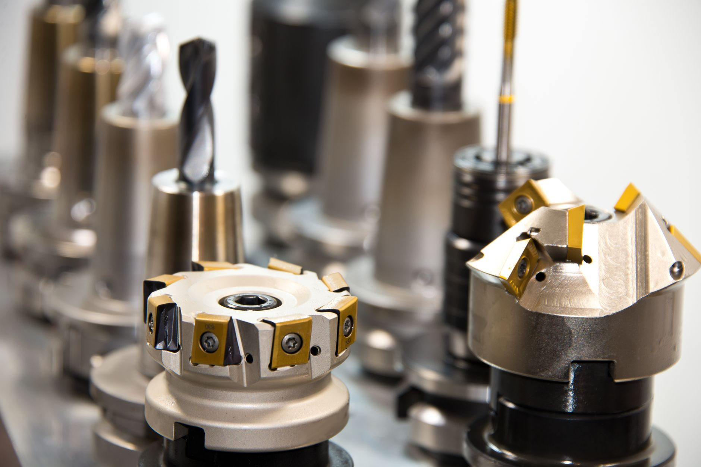

미중 이중 규제가 연 소재 수출 틈새

미국은 엔비디아·AMD AI 반도체의 제3국 수출에 사전 허가를 의무화하는 방안을 공식 추진 중이며, 중국은 갈륨·게르마늄·흑연·헬륨까지 수출 제한 범위를 확장하고 있다. 두 규제가 동시에 작동하면서 글로벌 반도체 공급망에 '규제 이중압박' 구조가 형성됐다.
중국산 갈륨·게르마늄 공급 차단으로 GaN(질화갈륨)·SiC(탄화규소) 기반 전력반도체 소재 가격이 규제 전 대비 각각 9배·3배 수준으로 올랐다. 동시에 미국 AI 칩 허가제가 현실화되면 HBM 패키징 소재의 중국 간접 수출도 타격을 받는 구조다.
그러나 규제 구조 안에 기회 구간이 있다. 미국 수출통제(EAR) 비해당 범용 소재는 중국 팹 공급이 법적으로 허용된다. 28nm 이상 레거시 공정용 포토레지스트·세정액·CMP 슬러리가 대표적이다. CXMT·YMTC 등 중국 내 레거시 팹의 한국 소재 대체 수요는 연간 약 2조원 규모로 업계는 추산한다.
일본 JSR·신에쓰화학은 이미 중국 레거시 팹의 포토레지스트·실리콘 웨이퍼 수요를 흡수하며 대중 소재 매출을 늘리고 있다. 한국 기업이 이 '중립 소재 공급자' 포지션 경쟁에 참여하려면 품목별 EAR 해당 여부 분류가 선행조건이다.
핵심은 규제 진공을 누가 먼저 채우느냐다. 미국 첨단 장비·소재가 빠진 자리에 EAR 비해당 소재 공급자가 들어가는 구조가 이미 시작됐다. 이 경쟁에서 한국은 일본에 6~12개월 뒤처진 상태다.
같은 소재라도 순도·규격에 따라 EAR 해당 여부가 달라진다. '소재 기업이면 수혜'라는 단순 논리는 위험하다. EAR 해당 첨단 소재 비중이 높은 기업은 오히려 중국 매출 감소 위험에 노출된다.
미중 이중 규제는 한국에 단기 비용(소재 가격 상승)과 중기 기회(레거시 팹 공급자 진입)를 동시에 만든다. 두 효과가 기업별로 다르게 나타나므로 포트폴리오 수준에서 분리 분석이 필요하다.
EAR 비해당 레거시 소재 기업: 동진쎄미켐(포토레지스트), 솔브레인(반도체 세정액)은 28nm 이상 공정 소재 라인업을 보유하고 있어 중국 레거시 팹 직납 기회가 법적으로 열려 있다. 이들 기업의 중국 매출 비중은 현재 10~15%로 확대 여지가 크다.
SiC 대안 소재 공급자: 중국산 SiC·갈륨 조달이 막힌 글로벌 전력반도체 기업이 한국·일본 대안 공급처를 탐색 중이다. SiC 기판 내재화를 추진 중인 SK실트론이 이 구간에서 글로벌 수주 기회를 얻고 있다.
첨단 공정 소재 기업(EAR 해당): EUV 펠리클·7nm 이하 공정용 소재는 EAR 해당으로 중국 수출이 막혀 있다. 중국 시장을 보고 생산 능력을 키운 기업은 수요처가 급감한 구조다.
HBM 패키징 소재 기업: 엔비디아 AI 칩 허가제가 현실화되면 HBM 출하량이 중국 향에서 제한되고, HBM 패키징용 소재(언더필·EMC)를 납품하는 한국 기업의 간접 수출도 타격을 받는다. 중국향 HBM 소재 매출 비중이 30% 이상인 기업은 리스크 노출 구간이다.
구매담당자는 보유 소재 포트폴리오를 EAR 해당·비해당으로 품목별 분류하고, 비해당 범용 소재에 대해 중국 레거시 팹 직납 가능성을 타진하라. 규제 회색지대에서 먼저 포지션을 잡는 기업이 향후 2~3년 대중 수출 기반을 선점한다.
투자자는 미중 이중 규제 수혜 기업 선별 기준으로 ① EAR 비해당 소재 매출 비중 50% 이상 ② 중국 이외 수출처 다각화 여부 ③ 레거시 공정 소재 매출 비중 상승 추세 세 가지를 교차 검증해야 한다. '소재 기업' 레이블만으로 수혜를 판단하면 첨단 소재 비중이 높은 기업을 잘못 포함하는 오류가 생긴다.
전략가는 한국 정부가 EAR 품목 분류 지원 서비스를 소부장 기업에 무상 제공하는 프로그램을 신설할 것을 제안한다. 일본 경제산업성은 이미 수출통제 전문 컨설팅을 중소 소재 기업에 지원하고 있어 한국 기업의 경쟁 불균형이 심화되고 있다.
실제 조달 현장에서는 — EAR 해당 여부가 같은 소재라도 순도·입자 크기·최종 용도에 따라 달라져, 현장에서 잘못 판단하면 미국 제재 리스크를 정면으로 맞는다. 공급 계약 전 반드시 미국 법무법인 또는 수출통제 전문 컨설턴트의 ECCN 번호 확인을 선행하는 것이 현장 기본 수칙이 됐다.
이 포스팅은 쿠팡 파트너스 활동의 일환으로 수수료를 제공받습니다.